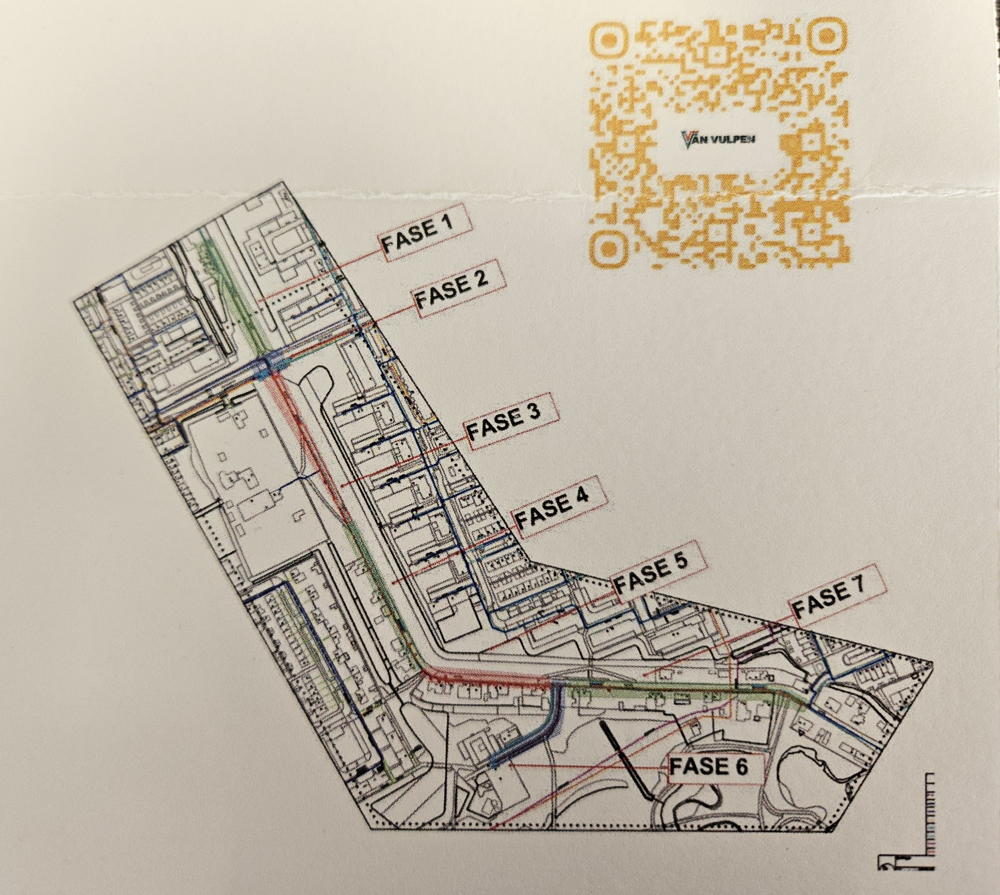

Werkzaamheden Stedin en Evides
Binnenkort starten er op de zuidkant van onze dijk werkzaamheden, waarbij de oude gasleidingen vervangen zullen worden. Dit is een paar jaar geleden op het grootste deel van onze dijk al gebeurd en wordt nu doorgetrokken naar de Zuidendijk richting het spoor. Oorspronkelijk zouden de werkzaamheden op 14 september starten, maar er door het niet tijdig beschikbaar zijn van materieel is dit een week uitgesteld en zal e.e.a. starten op 21 september 2026. Naar verwachting zullen de werkzaamheden tot mei 2027 duren, maar wij zullen de meeste hinder ondervinden van fase 1, die ongeveer 2 weken zal duren. In tegenstelling tot bijgaande afbeelding omvat fase 1 slechts het deel vanaf nr. 327 richting De Savornin Lohmanweg.
Men heeft toegezegd er alles aan te doen om de overlast tot een minimum te beperken, echter er zal vanaf nr. 327 wel een tijdelijke wegonderbreking zijn. Met bebording zal een omleiding worden ingesteld.
Wil je op de hoogte blijven van de ontwikkelingen, dan kan dit via de “BouwApp”. Scan de onderstaande QR-code of klik hier en zoek daarna op “Zuidendijk Dordrecht”. Hier worden ook eventuele updates in het werk vermeld.
